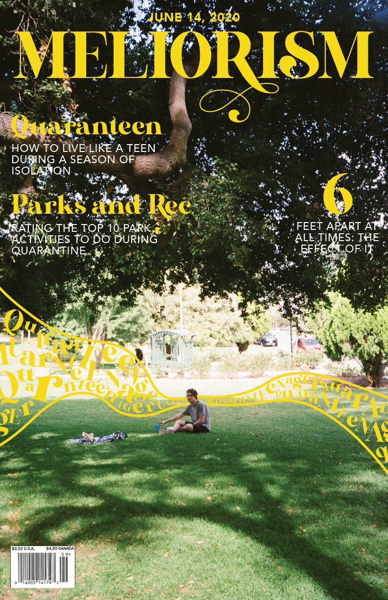

<!DOCTYPE html>
<html>
    <link rel="stylesheet" href="main.css">

<header class="6feet-image">
    <a href="index.html"> </a>
    </header>
 <div id="background-video">
 <video playsinline autoplay muted loop>
        <source src="asset/6Feetvideo.mov" type="video/webm">
     </video></div>
</html>